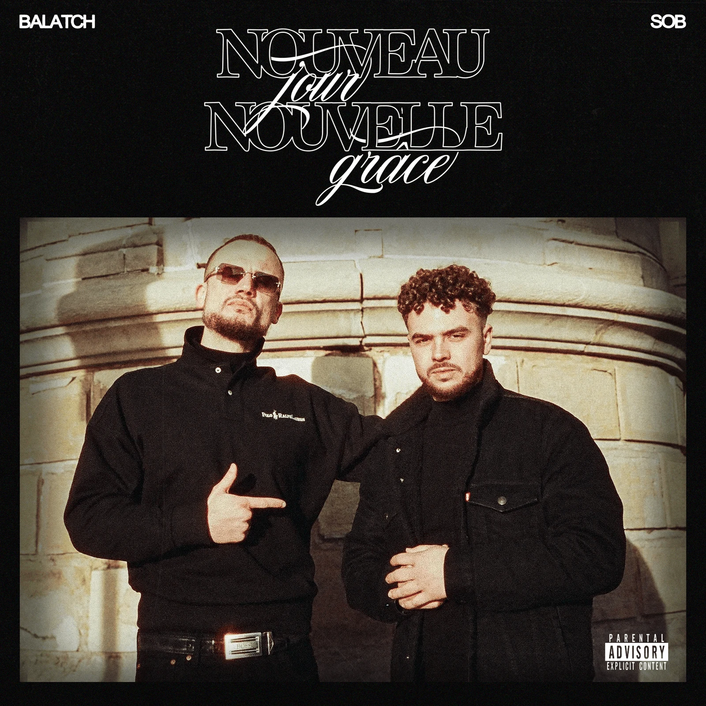
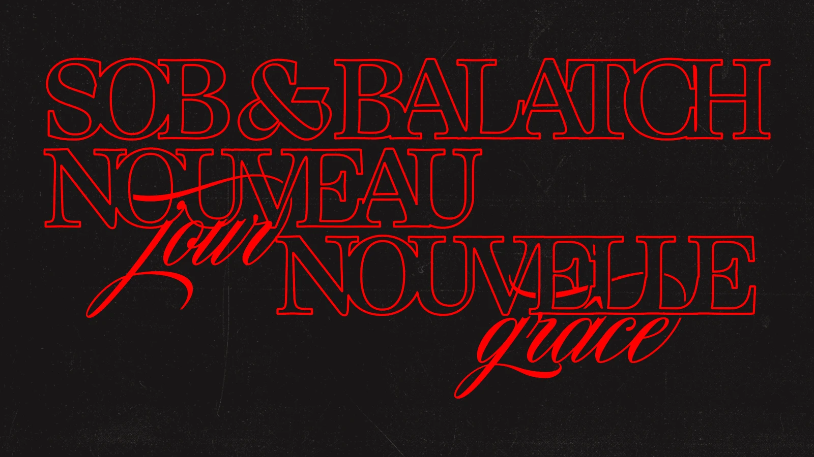
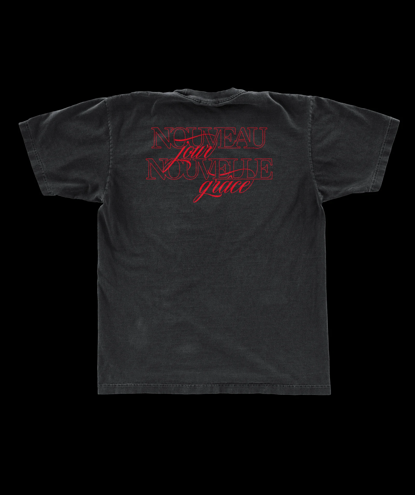

NOUVEAU JOUR, NOUVELLE GRÂCE
Visuel pour l’EP "Nouveau Jour, Nouvelle Grâce" de SOB & Balatch. De l’aube au crépuscule, "Nouveau Jour, Nouvelle Grâce" est un récit en trois chapitres, conçu par le duo comme une ride émancipatrice au rythme d’une journée et de ses épreuves. L'équipe : 📸 Photos : @fuji.joo 🔊 Artistes : @187_sob & @balatch_beatz 💿 Label : @paprika_records


